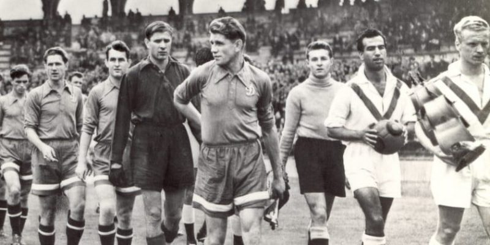

La historia del fútbol se considera a partir de 1863 , año de fundación de la Asociación Inglesa de Fútbol, aunque en sus orígenes eran , al igual que los demás códigos de fútbol, se remontan varios siglos en el pasado, particularmente en las islas británicas durante la Edad Media. Si bien existían puntos en común entre diferentes juegos de pelota que se desarrollaron desde los años del siglo III a. C.
En 1848 representantes de diferentes colegios ingleses se dieron cita en la Universidad de Cambridge para crear el código Cambridge, que funcionaría como base para la creación del reglamento del fútbol moderno. Finalmente, en 1863 en la ciudad de Londres se oficializaron las primeras reglas del fútbol.
Desde entonces el fútbol ha tenido un crecimiento constante, hasta llegar a ser el deporte más popular del mundo con unas 270 millones de personas al día involucradas. Con la realización de la primera reunión de la International Football Association Board en 1886 y la fundación de la FIFA en 1904, este deporte se ha expandido hasta llegar a todos los rincones del mundo. A partir de 1930 se comenzaría a disputar la Copa Mundial de Fútbol, que se convertiría en el evento deportivo con mayor audiencia del mundo.